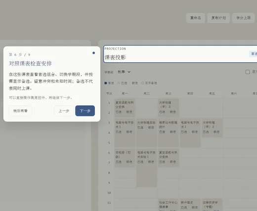
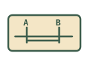
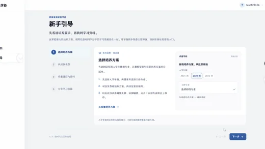
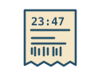

技术差异DIFFERENCE
和已有的开源项目、成熟方案相比，你们开发的技术有什么独特之处？
如何避免重复造轮子？如果决定再造一遍，是因为现有方案满足不了需求，还是为了学习、可控性，或其他明确的目标？

为什么再造一遍轮子？
和已有的开源项目、成熟方案相比，你们开发的技术有什么独特之处？
如何避免重复造轮子？如果决定再造一遍，是因为现有方案满足不了需求，还是为了学习、可控性，或其他明确的目标？
谁会在什么场景使用它？它解决了什么真实需求？
现在做出来的功能，是用户真正需要的吗？
项目发布后，如何持续维护、迭代和运营，兼顾社区活力与工程质量？
怎么吸引并留住贡献者？在开放协作中，代码审查、测试和版本管理如何帮助项目保持稳定？
随着模型、平台和同类技术演进，项目还能提供什么难以替代的价值？
哪些功能可能被更强的模型或平台原生功能覆盖？你们希望积累哪些优势，又会如何调整定位和技术路线？
(have fun exploring)
Honesight 为摄影爱好者设置每周拍摄任务，把图片分析、作品集与社区交流放在同一个练习空间。
 02.CC98 AI+插件
02.CC98 AI+插件想持续关注 CC98 上的一个话题，却要反复换关键词搜索？这个插件从这个日常麻烦出发，尝试帮用户找到相关帖子，并订阅后续内容。
 03.学长组 Agent
03.学长组 Agent转专业条件、推免规则和奖助政策散在不同网页。学长组 Agent 把这些资料整理成可提问的入口，方便同学顺着问题查找校内信息。
 04.ZJU Agent
04.ZJU Agent打开一个应用，就能查看课表、待办和通知。ZJU Agent 面向需要反复切换校内平台的同学，将分散的信息整理到同一处。

05.ZJU选课助手从挑选课程到编排志愿，ZJU 选课助手把课程探索、教学班选择和排课方案比较串在一起。
涉及个人选课信息，本次仅展示项目介绍。

07.bilibili-study-extension搜一门课或一条健康饮食视频时，推荐内容里常常夹着推广。这个 B 站辅助插件允许用户按自己的规则整理推荐，筛掉干扰。
“帧好 GenWow” 是一款面向日常拍摄场景的 AI 实时构图引导相机，瞄准大众用户 “想拍好但不会构图” 的普遍痛点，依托多模态大模型与计算机视觉技术提供即时、易懂的画面调整建议，让零摄影基础的用户也能拍出具备专业构图感的作品。
早晨 7:55，距离签到只剩五分钟。游戏从一段熟悉的浙大校园日常开始，把场景互动、像素探索和解谜串成一段意外的旅程。

10.求是学径还差哪些学分？下一学期该修什么？求是学径把培养方案、修读进度和课程资料放在一起，方便浙大本科生安排自己的学习路径。

11.浙大夜惊魂如果紫金港的时间停在 23:47，你还敢横穿校园吗？这款网页探索游戏以同名小说为蓝本，让玩家沿着室友留下的线索，在熟悉的地标之间解谜。